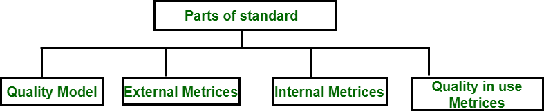
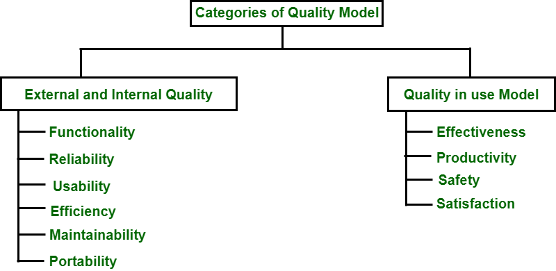

8.5 Software Quality Frameworks
A software quality framework provides a structured model for defining, measuring, and evaluating software quality attributes. Several frameworks have been proposed since the 1970s, each organising quality factors differently. Understanding these models helps teams communicate about quality, select appropriate metrics, and compare products objectively.
McCall's Quality Model (1977)
John McCall proposed a model with 11 quality factors grouped into three categories based on how the software is used and maintained:
Product operation (runtime behaviour)
- Correctness: The extent to which the program satisfies its specification and fulfils the user's objectives.
- Reliability: The ability to perform intended functions without failure over a specified period.
- Efficiency: The amount of computing resources (CPU, memory, I/O) consumed relative to the functions performed.
- Integrity: The degree to which access to programs and data is controlled and unauthorised access is prevented.
- Usability: The effort required to learn, operate, and prepare inputs for the program.
Product revision (ability to change)
- Maintainability: The effort required to locate and fix errors in an operational program.
- Flexibility: The effort required to modify an operational program.
- Testability: The effort required to test a program to ensure it performs its intended functions.
Product transition (adaptability to new environments)
- Portability: The effort required to transfer a program from one hardware or software environment to another.
- Reusability: The extent to which a program (or parts of it) can be reused in other applications.
- Interoperability: The effort required to couple one system to another.
Boehm's Hierarchical Quality Model (1978)
Barry Boehm proposed a hierarchical model that connects high-level quality goals to measurable primitive constructs through intermediate quality factors:
- Primary uses (top level): As-is utility (how well the software works now), maintainability (how easily it can be changed), and portability (how easily it can be moved to new environments).
- Seven general quality factors (middle level): Portability, reliability, efficiency, human engineering (usability), testability, understandability, and modifiability.
- Primitive constructs (bottom level): Measurable attributes such as device independence, completeness, consistency, and accuracy that can be directly observed or measured in the software.
- The hierarchy allows quality goals to be traced down to concrete, measurable properties of the code and documentation.
ISO/IEC 9126 Quality Model
ISO/IEC 9126 is an international standard that defines a comprehensive software product quality model. It consists of four parts:

| Part | Title | Content |
|---|---|---|
| Part 1 | Quality model | Defines six quality characteristics and their sub-characteristics |
| Part 2 | External metrics | Metrics measured by executing software (behaviour in use) |
| Part 3 | Internal metrics | Metrics measured from source code and documentation (static properties) |
| Part 4 | Quality in use metrics | Metrics measured in the user's environment (effectiveness, productivity, safety, satisfaction) |
Six quality characteristics (Part 1)

| Characteristic | Sub-characteristics |
|---|---|
| Functionality | Suitability, accuracy, interoperability, security, compliance |
| Reliability | Maturity, fault tolerance, recoverability, compliance |
| Usability | Understandability, learnability, operability, attractiveness, compliance |
| Efficiency | Time behaviour, resource utilisation, compliance |
| Maintainability | Analysability, changeability, stability, testability, compliance |
| Portability | Adaptability, installability, co-existence, replaceability, compliance |
Quality in use (Part 4)
- Effectiveness: The accuracy and completeness with which users achieve specified goals.
- Productivity: The resources expended relative to the results achieved in a specified context of use.
- Safety: The ability of the software to avoid states in which harm to people, business, or property can result.
- Satisfaction: The degree to which user needs are fulfilled, including comfort and acceptability of use.
ISO/IEC 9126 has been superseded by ISO/IEC 25010 (Systems and Software Quality Requirements and Evaluation — SQuaRE), which expands the model to cover data quality and quality of services in addition to product quality. For exams, the six characteristics of 9126 remain commonly tested.
Popular organisational quality frameworks
Beyond product-quality models, organisations adopt process-level frameworks to institutionalise quality:
- ISO 9000: International Quality Management System standards — certifies that an organisation follows documented, repeatable processes (see §8.6).
- CMMI (Capability Maturity Model Integration): Process maturity framework with five levels from ad hoc to optimising — assesses and improves organisational process capability (see §8.7).
- Six Sigma: Data-driven methodology to reduce defects and process variation — targets 3.4 defects per million opportunities (see §8.8).
Q: Compare McCall's, Boehm's, and ISO/IEC 9126 quality models. List the six ISO 9126 characteristics and quality-in-use metrics.
Model answer points:
- McCall (1977): 11 factors in 3 groups — product operation (5), product revision (3), product transition (3).
- Boehm (1978): hierarchical — primary uses (utility, maintainability, portability) → 7 factors → primitive constructs.
- ISO 9126: 4 parts (model, external metrics, internal metrics, quality in use); 6 characteristics with sub-chars.
- Six characteristics: functionality, reliability, usability, efficiency, maintainability, portability.
- Quality in use: effectiveness, productivity, safety, satisfaction.
- 9126 replaced by ISO/IEC 25010 (SQuaRE).
- Organisational frameworks: ISO 9000, CMMI, Six Sigma.